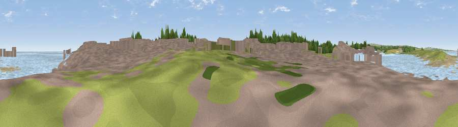

Viewpoint near Amble
#38831 in England · top 93% of its area beats it · near AmbleWhere it is
The exact computed spot (NU 26703 04682). Click the marker for map links.
The view, rendered

A 360° render of this exact spot computed from the terrain model, tree cover and land cover — summer colours, afternoon light, calibrated against photographs of famous viewpoints. Real trees, hedges and buildings will differ in detail.
The panorama
Grey silhouette: terrain skyline in each direction (720 bearings, Earth curvature and refraction included). Dashed green: skyline with trees (+15 m) and buildings (+8 m) as obstacles. Blue strip: how far the ground is visible on each bearing.
Where the view opens
Wedge length = distance to the farthest visible ground on that bearing (vegetation-aware). Rings at 10, 25 and 50 km.
What fills the view
50% water · 18% built-up · 17% grassland · 5% bare ground · 5% woodland · 4% cropland
Angular shares of the visible panorama (visual magnitude), not map area. Landscape diversity 0.61 (0–1 Shannon).
Key numbers
More beautiful places nearby
The staircase of upgrades: each row has a higher view potential than everything closer. Driving times are estimates from straight-line distance, calibrated against real road routing — check an actual route before setting out.
| Place | Direction | Drive | Score |
|---|---|---|---|
| Viewpoint near Amble | SE · 3 km | ~8 min | 44.8 |
| Viewpoint near Alnmouth | NNW · 7 km | ~14 min | 58.3 |
| Bilton Banks | NW · 7 km | ~15 min | 68.5 |
| Viewpoint near Hipsburn | NW · 8 km | ~16 min | 69.8 |
| Viewpoint near Shilbottle | WNW · 8 km | ~16 min | 70.6 |
| Ratcheugh Crag | NNW · 11 km | ~21 min | 75.8 |
| Viewpoint near Alnwick | NW · 15 km | ~26 min | 77.7 |
| Cloudy Crags | NW · 15 km | ~27 min | 80.2 |
55.33546, -1.58060 · source: osm viewpoint · position refined by local search. Computed location — check access rights before visiting.